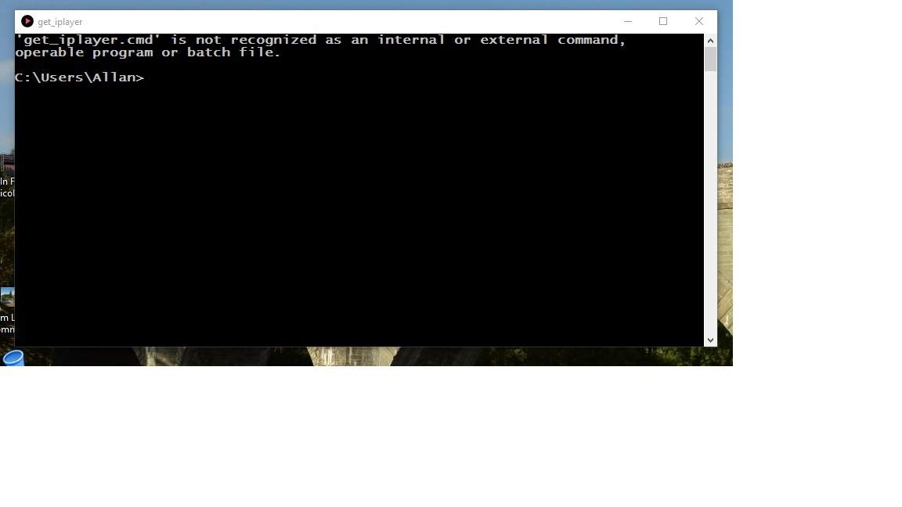
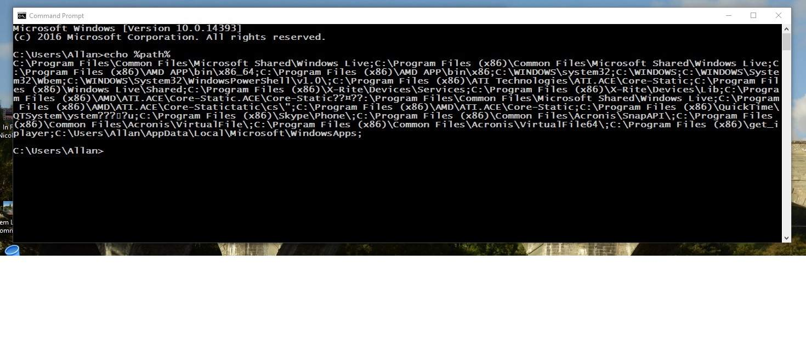

I have just installed get_iplayer v 2.97 and when I click on the icon to run get_iplayer the command window opens and the following message appears:
get_iplayer.cmd is not recognized as an internal or external command with the following path showing C: /users /Allan
My previous version was running perfectly now I can't download any programs. I've use get_iplayer for a couple of years now.
My os is win 10 and my previous installation was operating on win 10 with no issues.
HELP!
Open a command prompt and run echo %PATH%. If it prints a humongous string that does not include the get_iplayer installation directory, that means the system PATH environment variable is overstuffed and must be trimmed so the paths for get_iplayer can be added. This issue is noted in the Windows installation instructions. Google for info on how to clean up your system PATH environment variable. Once it is trimmed, reinstall get_iplayer and then run echo %PATH% in a new command prompt to check that %PATH%contains the get_iplayer installation directory.
If you initial invocation of echo %PATH% prints a relatively short string that does not contain the get_iplayer installation directory, that would indicate the installer was blocked from updating the system PATH environment variable for some reason, though that would be very unusual. In that event, try reinstalling get_iplayer to see if it's second time lucky.
I ran echo %path% as you suggested and although there was a lot it wasn't humongous. Not breaking the limits as far as I could see. Also get_iplayer was in the path.


Thanks. It could be a problem with content rather than length. I see a number of garbage/illegal characters and signs that PATH may have been corrupted by another installer. The content of PATH should print cleanly from a command prompt and should contain only valid directories. Clean it up and try again at a new command prompt.
Thanks Dinky, I have deleted two lines in advanced systems variables section that appeared to have erroneous characters in them. I have copied and pasted them in a word doc for future editing to add to the path variables when I find if stuff doesn't work.
I have reinstalled get_iplayer and now all is well. Happy now and thanks for the help.
{kind=link}
{kind=link}